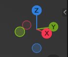
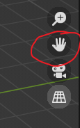
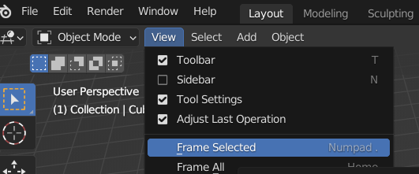
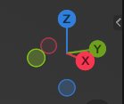
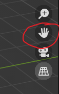

基础操作选择
- 选中
鼠标左键 - 取消选中
鼠标左键 点击空白环境 - 全选
a - 取消全选
alt+A
旋转
鼠标中键- 点击，或拖拽方向球

移动物体
g拖拽场景
shift+鼠标中键- 从这里拖拽

聚焦
 界面操作/技巧
- 下方工具提供了当前的鼠标操作用途
- 右键boundary 可以分割视窗/合并视窗
ctrl+space 最大化/还原当前视窗ctrl+PgUp/PgDn 切换预设模式(Layout, Modelling...)
快速工具栏
t 展开/收起左侧工具栏
shift+space的光标位置生成左侧工具栏n 展开/收起右侧快速设定栏
3D 光标
- 快速设定栏里调
shift+鼠标右键shift+s 快捷操作
属性编辑器
选择
- 选中
鼠标左键 - 取消选中
鼠标左键点击空白环境 - 全选
a - 取消全选
alt+A
旋转
鼠标中键- 点击，或拖拽方向球

移动物体
g拖拽场景
shift+鼠标中键- 从这里拖拽

聚焦
界面操作/技巧
- 下方工具提供了当前的鼠标操作用途
- 右键boundary 可以分割视窗/合并视窗
ctrl+space最大化/还原当前视窗ctrl+PgUp/PgDn切换预设模式(Layout, Modelling...)
快速工具栏
t展开/收起左侧工具栏shift+space的光标位置生成左侧工具栏n展开/收起右侧快速设定栏
3D 光标
- 快速设定栏里调
shift+鼠标右键shift+s快捷操作